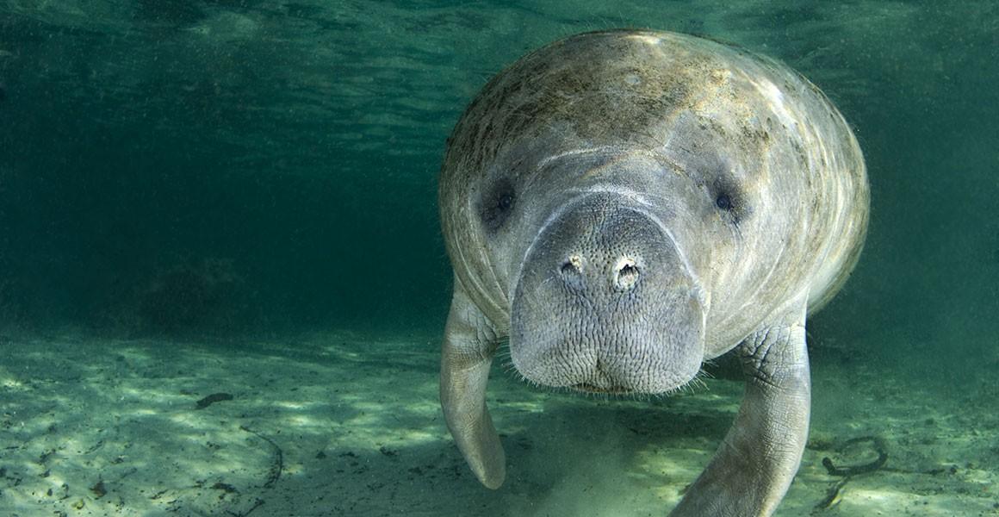
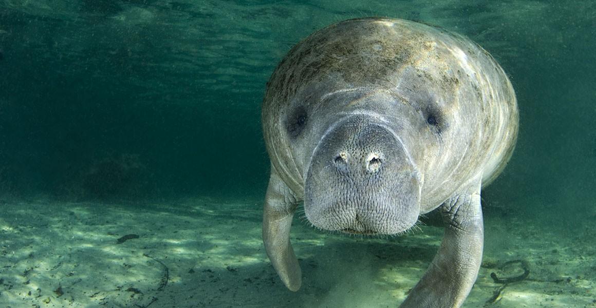

Manatees are large, fully-aquatic marine mammals. They are also known as sea cows.
Manatees weigh roughly 500 kilograms and are normally 3 metres long.
 

Manatees have thick pads around their lips and beaver-like tails.
They can swim at 5 to 10 kilometers per hour. They can dive for up to 15 minutes.
Manatees are more closely related to hyraxes and elephants than they are to dolphins or whales.
Manatees are one of the two types of Sirenians left on earth. The other type of Sirenian is the Dugong.
These are four or five manatee species